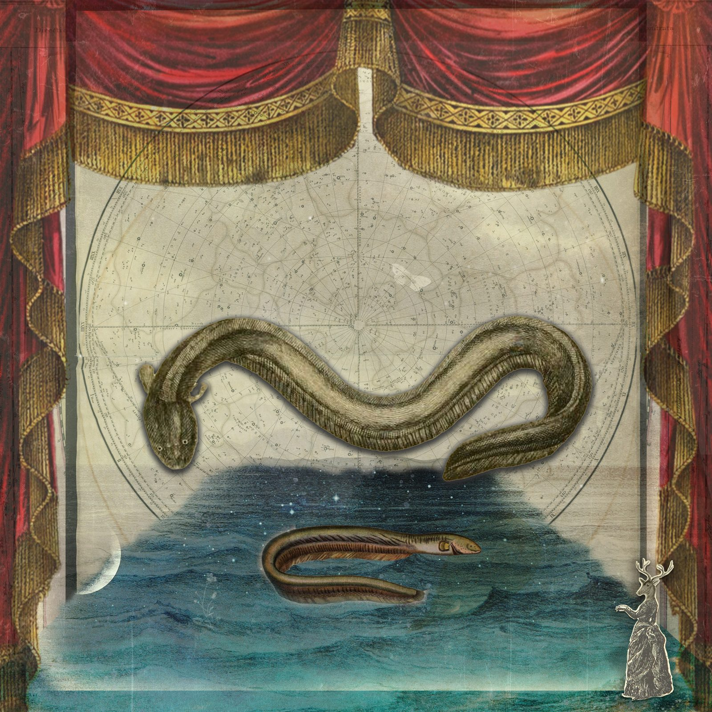

The Ministry of Small Injustices uses electric eels and free verse to solve litter

- Problem (chosen)
- Litter
- Creature (dealt)
- Electric eel
- Form (dealt)
- Free verse
Litter is usually blamed on a shortage of bins or common sense. The Ministry has investigated the bins and found them blameless.
The electric eel is not an eel. It is a knifefish, and it lives in murky water where it can see very little. It finds its way by giving off a weak electric field and noticing anything that disturbs it. It saves its stronger discharge, of several hundred volts, for occasions that warrant it.
Free verse has no fixed metre and no rhyme, so people often take it for poetry without rules. In fact it has one rule: every line ends exactly where the poet decides, be that with a typewriter, pen or paused speech.
The Department of Irregular Packaging therefore proposes that litter be reclassified as a line break. A crisp packet set down on a pavement ends one line and begins another. Whoever set it down is the author of that line break and must be able to justify the decision on request.
Citizens are asked to move through public space as the eel moves through water, and a reader moves through a long poem, giving off a low, continuous attention and registering anything that disturbs it, including line breaks. If a line break cannot be justified then it is registered through a weak electric field. Fly-tipping will warrant a stronger discharge.
A single child’s glove on a railing has been ruled acceptable as a line break.
Risks. A lay-by outside Leominster now holds forty-one cans spaced so deliberately that the Department cannot rule them litter. A small press has asked to publish the lay-by.
The wrapper *staysdropped.thisbreak.
[Your credit line: how the report was drafted, edited and illustrated]